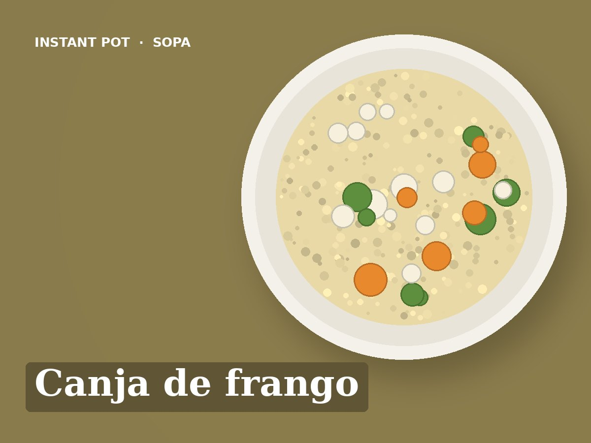

Canja de frango
Idioma: português de Portugal (pt-PT). Esta receita está escrita em português de Portugal. Ao importar, manter o título, os ingredientes e todos os passos em português, sem traduzir para inglês. Usar unidades métricas (g, ml, °C).
Ingredientes
- 2 coxas de frango ou 1 peito (cerca de 400 g)
- 1 cebola
- 2 cenouras
- 100 g de arroz
- 1,5 litros de água
- Hortelã ou salsa
- Sal q.b.
Preparação
- Pôr tudo na panela: a cebola inteira e a cenoura em cubos.
- Pressão (Pressure Cook): Pressão alta, 10 minutos.
- Libertação natural 10 minutos.
- Retirar o frango, desfiar sem pele nem ossos e voltar a pôr na panela. Hortelã no prato.